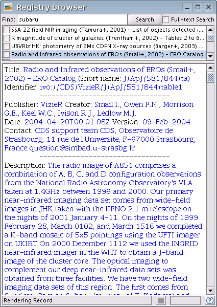

Registry Browser
Use to browse registry entries. Enter your search criteria into the search field, check the 'Full-text' field
if you wish to search all the text in the registry.
A list of registry entries matching your search criteria will be listed. Click a particular name to see details of the entry,
either as an overview or the whole registry entry using  .
.
